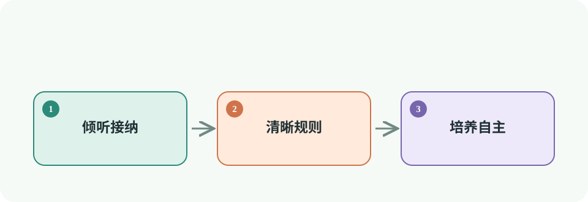
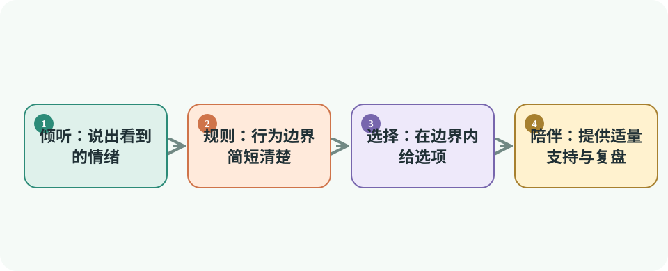

亲子沟通：接住情绪，守住规则，给出选择
让孩子感到被理解，同时把安全规则说得具体、稳定且适龄
01 · 从一个具体问题开始
孩子说“我还想玩”，成人听到的可能是“不听话”，孩子表达的却可能只是活动还没结束。若成人直接命令，孩子更难理解规则与下一步。
先反映孩子的感受和愿望，再用简单语言说明规则与理由，最后提供年龄适宜、真实可选的执行方式。
02 · 把方法拆成可观察的动作
在亲密关系、代际关系与亲子教育中，兼顾情绪理解、个人边界和可执行安排。 这些动作是教学工具，不是必须逐字套用的公式。

倾听接纳
放慢语速，反映孩子听到的事实与情绪，给回应空间。
清晰规则
把“情绪可以有”与“伤人行为不可以”区分开，说明少量清晰规则。
培养自主
在安全边界内提供二选一或共同制定小步骤，鼓励自主承担。
03 · 多轮案例：回应怎样随着信息推进
收拾玩具案例展示规则不变、执行方式可选的沟通设计。
收拾玩具
孩子玩完积木不愿收拾；原先约好晚饭前收拾客厅。
沟通目标：一起把积木分类收到盒子。
我还想玩！
你还想继续搭，我看见你玩得很投入。我们之前约好晚饭前把客厅的积木收好，现在到收拾时间了。
为什么非要现在收？
因为客厅等会儿要用，地上的积木也容易踩到。你可以选先收红色积木还是先收大积木，规则不变，但顺序可以你来定。
示范回应用于观察结构，不是唯一正确答案。真实沟通应根据事实、关系和风险调整。

04 · 交互拆解：逐步检查每个动作
选择一个动作，观察它解决的具体问题。所有步骤默认都在页面中可读；按钮只是帮助你聚焦其中一层。
怎样把沟通原则变成下一句话
倾听接纳
放慢语速，反映孩子听到的事实与情绪，给回应空间。
检查点：这一轮是否回应了对方刚刚提出的具体问题？
清晰规则
把“情绪可以有”与“伤人行为不可以”区分开，说明少量清晰规则。
检查点：这一轮是否回应了对方刚刚提出的具体问题？
培养自主
在安全边界内提供二选一或共同制定小步骤，鼓励自主承担。
检查点：这一轮是否回应了对方刚刚提出的具体问题？
当前聚焦第 1 步。
05 · 常见失误与适用边界
- 把孩子的情绪当作故意挑战权威。
- 规则太多、太抽象，孩子不知道怎么做。
- 给出并不真实的选择，或把成人责任转嫁给孩子。
如果存在暴力、威胁、胁迫、自伤风险或明显权力滥用，不要把继续沟通或说服对方当成唯一任务；优先考虑现实安全、可信任的人和适当的专业支持。
06 · 把文章变成一次练习
用一个日常小任务练习：先说出孩子可能的感受，再说一条具体规则，最后给两个都可接受的选项。
收拾玩具
在训练页打开这道案例，先隐藏参考、逐轮作答，再做四维自评。
07 · 来源与说明
本文区分外部框架、项目教学改编和案例示范。引用只支持来源中明确涉及的概念，不代表本文所有表达步骤均经过实验验证。
- CDC · Active Listening · https://www.cdc.gov/parenting-toddlers/communication/active-listening.html（Active listening guidance for parents of toddlers）
本文的案例、步骤顺序、互动拆解和四维自评属于言习课程设计。项目自评用于个人纵向复盘，不是经心理测量验证的量表，也不是任何机构的认证课程。